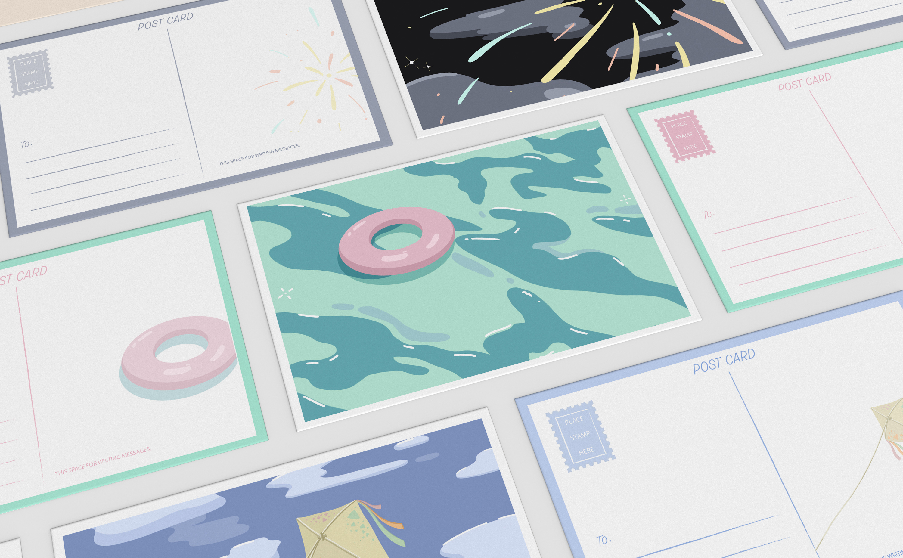
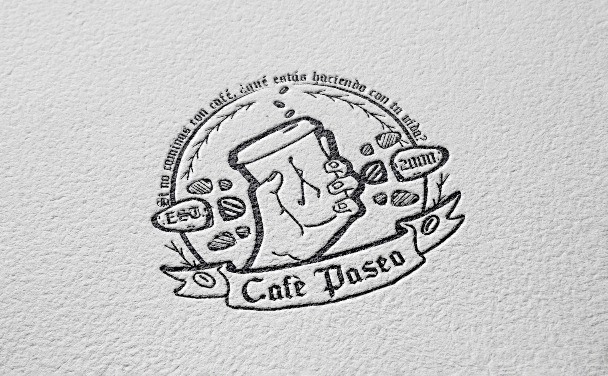
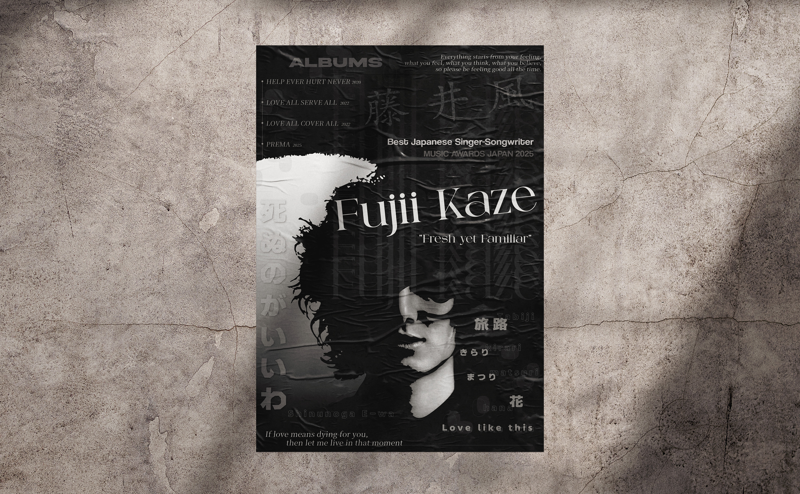
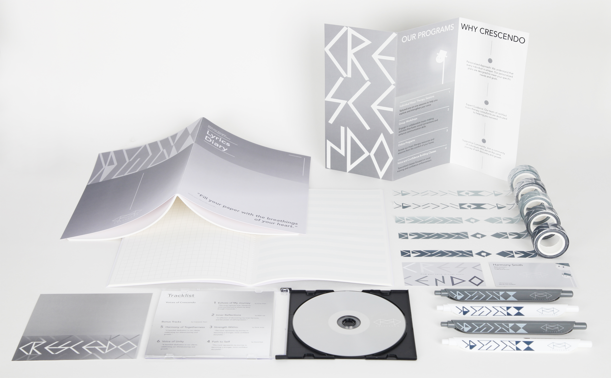
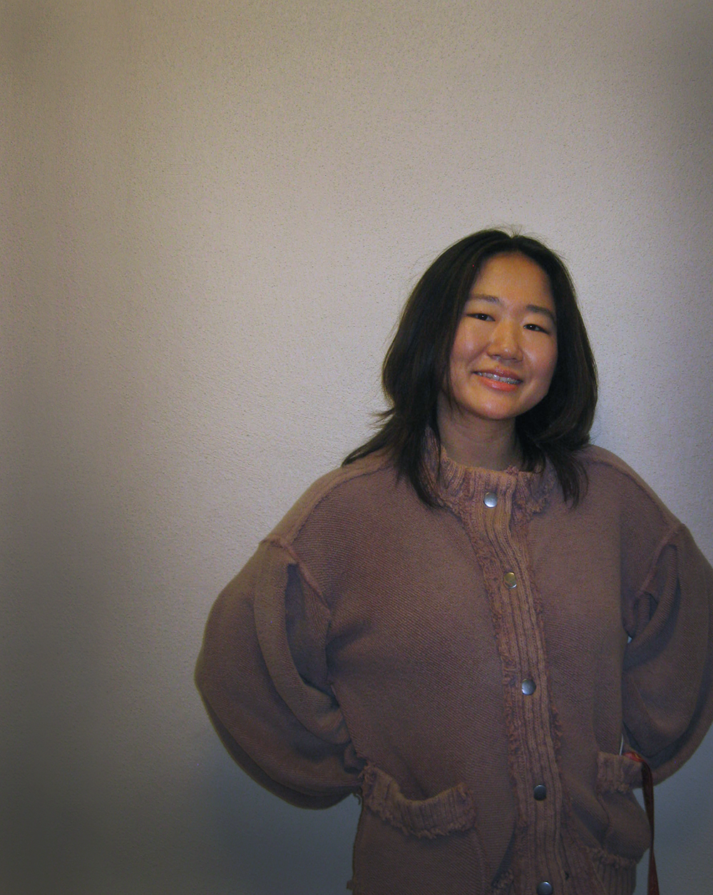

GENUINE KO
work about me



I am Genuine Ko, a junior BFA Design major at USC Roski School of Art and Design with a minor in Music Production. I'm drawn to things that are fluid, undefined, and untold, as I believe in the potential for change within them and the deep resonance within the unseen. As a creator, observer, analyst, and learner, I came to see the world from multiple angles through the cities and environments in which I grew up. The world is deeply interconnected, and yet every part of it speaks in its own voice. I find meaning in the spaces, the moments, and what passes between us, in all the things that are easy to overlook. In design, I believe in the weight of emptiness and what's implied. What is left out can be just as intentional as what remains.
Music is my unavoidable passion. I'm drawn to how it exists as a language, in words and beyond them, expressed through melody, rhythm, and harmony. It's a passion I follow into everything I do. I sing and arrange for Trogons, USC's premier East Asian a cappella group, and co-design social media for Band Kori, USC's one and only K-pop band. Culture and identity are always somewhere in my work, shaping the kind of thinking that doesn't fit neatly into one category.
